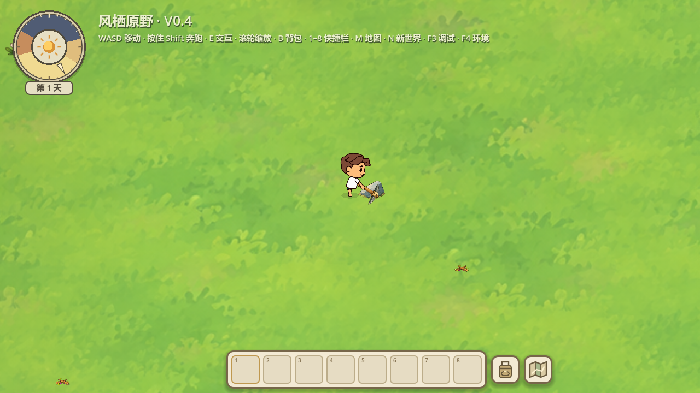
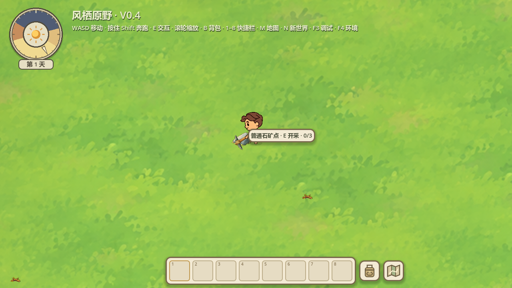
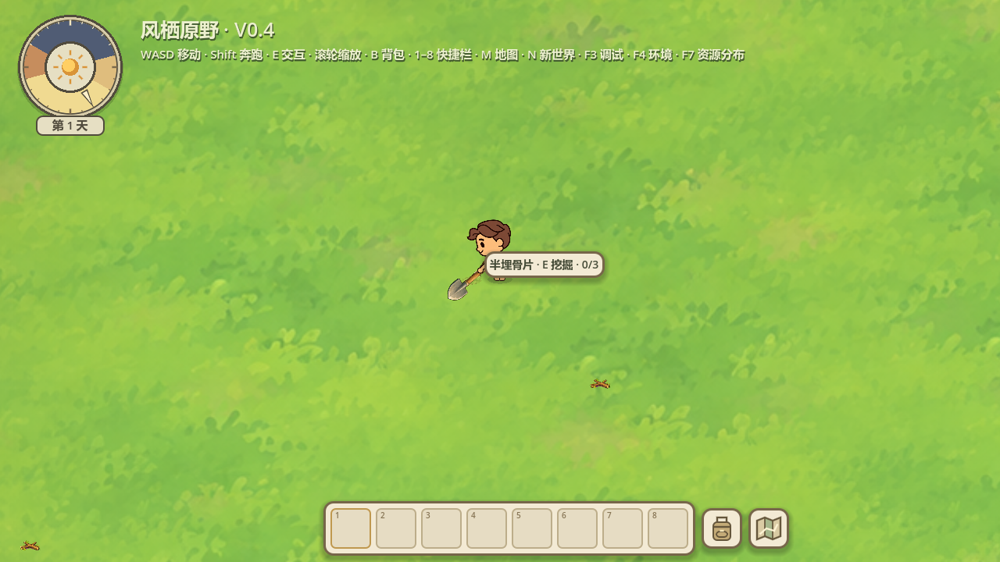
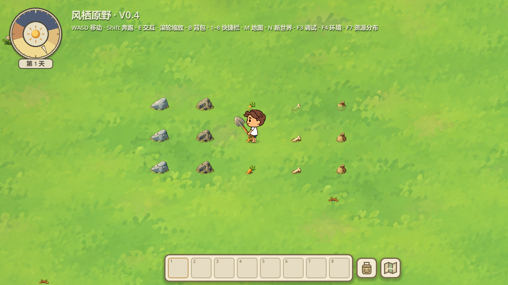
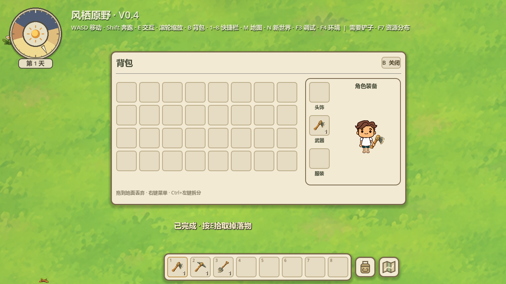

2026-10-17 · Godot 4.7.2 Stable / Compatibility / RTX 5060
真实Godot运行画面，左右侧各自保持原生持握轨迹。



每列同一资源类型、三行依次为初始/中途/完成状态对照。正式单个资源的主体不再切换位置或轮廓。底部原画边缘读取当前画面的纯地表，不按生态套统一颜色。


| 检查 | 结果 |
|---|---|
| 采集/快捷装备专项 | 72项，0失败 |
| 原生左右侧工具/右手层级 | 20项，0失败 |
| 原背包交互共享依赖 | 51项，0失败（无头原生Control输入） |
合计143项通过。覆盖长按/松开、单目标单次命中、装备实例不重复、快捷键切换/图标、原子存档读回、参考失效处理、原生镜像/握点、取消恢复，以及原拖拽/右键/拆分/销毁。
窗口版旧拖拽测试有不稳定输入失败，日志item-actions.log保留；调试窗口曾51项通过，最终以隔离桌面鼠标的无头原生界面输入51项通过作为共享交互验证。首次长按夹具未把按键状态交给Input、后有矿石掉落抢占新测试目标，已修正夹具；不把这些失败写成通过。不进行无关全量回归或新增FPS压力测试。
修改scripts/harvest_node.gd、harvest_hit.gdshader、player.gd、held_tool.gd、item_inventory.gd、item_service.gd、item_ui.gd。新增hotbar_equipment存档字段仅保存引用，旧档缺字段按空映射读入；未知/悬空引用忽略，不放宽原装备实例重复校验。当前激活的快捷引用按装备保护，需先卸下后拖地丢弃/销毁；仍可拖回背包或调整空快捷格位置。
没有生成/重绘/修改PNG，没有改变角色原动作资产、地图生成、碰撞尺寸或资源掉落数量；资源耗尽与次数存档保持。实际视觉手感待用户复查。本轮完成停止。